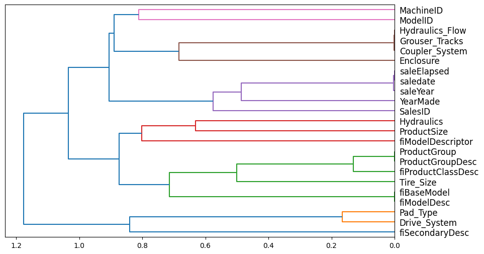
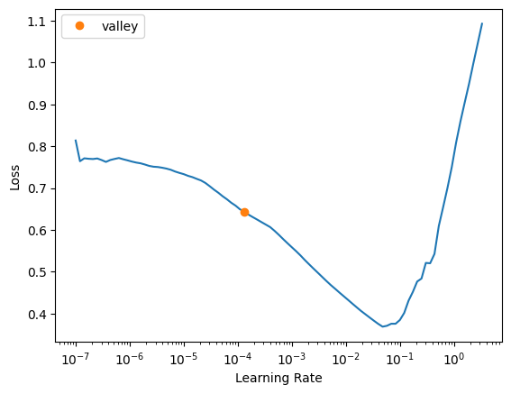
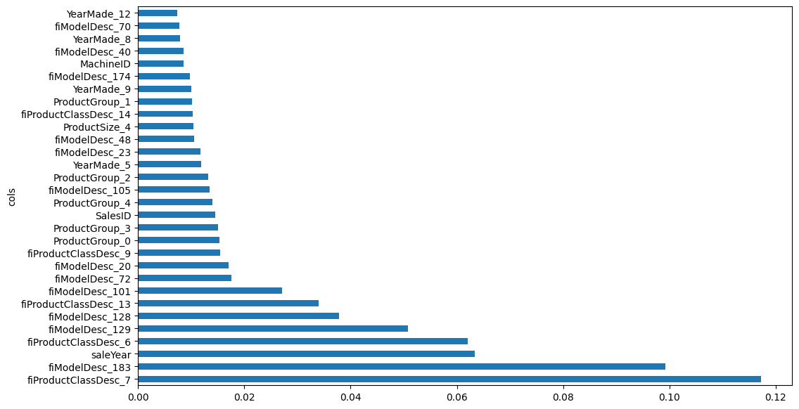
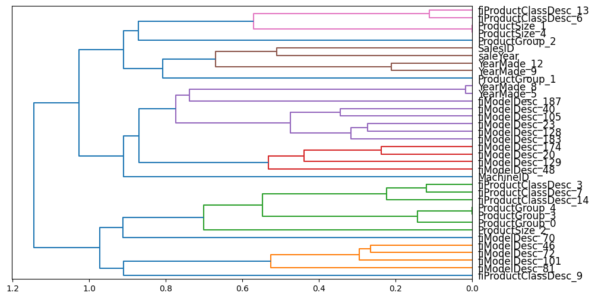

!pip install dtreeviz
from pandas.api.types import is_string_dtype, is_numeric_dtype, is_categorical_dtype
from fastai.tabular.all import *
from sklearn.ensemble import RandomForestRegressor
from sklearn.tree import DecisionTreeRegressor
from dtreeviz.trees import *
from IPython.display import Image, display_svg, SVG
pd.options.display.max_rows = 20
pd.options.display.max_columns = 8Using Neural Net Embeddings to Improve a Random Forest
deep learning
python
In this notebook I replace categorical features in a dataset with corresponding neural net embedding outputs to improve the performance of a random forest.
Background
In this blog post I’ll work through the third “Further Research” exercise from Chapter 9 of the fastai textbook:
Use the embeddings from the neural net in this chapter in a random forest, and see if you can improve on the random forest results we saw.
I’ll train a neural net on the dataset, grab its embeddings for categorical variables, replace the existing categorical variables in the dataset with them, and then train a random forest on that updated dataset.
The neural net in the chapter was trained on only a subset of columns (after removing columns that were redundant and low importance). I’ll first go through the process of reducing the number of used columns with a random forest as done in the chapter text before training the neural net.
In addition to the textbook, I also heavily reference the code provided in this medium post by Adam Mehdi a similar implementation of which was shared in this fastai forum post (sign-in required).
Here is a summary of error values for models fit on the original and embedding-filled datasets in this exercise:
| Model | Validation MSE | Reduction in MSE |
|---|---|---|
| RF (no embedding columns) | 0.247074 | – |
| RF (329 embedding columns) | 0.238825 | 3.33% |
| RF (32 embedding columns) | 0.243094 | 1.6% |
Load the Data
from pathlib import Path
cred_path = Path("~/.kaggle/kaggle.json").expanduser()
if not cred_path.exists():
cred_path.parent.mkdir(exist_ok=True)
cred_path.write_text(creds)
cred_path.chmod(0o600)import zipfile,kaggle
path = Path('bluebook-for-bulldozers')
if not path.exists():
kaggle.api.competition_download_cli(str(path))
zipfile.ZipFile(f'{path}.zip').extractall(path)Downloading bluebook-for-bulldozers.zip to /content100%|██████████| 48.4M/48.4M [00:00<00:00, 65.2MB/s]df = pd.read_csv(path/'TrainAndValid.csv', low_memory=False)df.head()| SalesID | SalePrice | MachineID | ModelID | ... | Blade_Type | Travel_Controls | Differential_Type | Steering_Controls | |
|---|---|---|---|---|---|---|---|---|---|
| 0 | 1139246 | 66000.0 | 999089 | 3157 | ... | NaN | NaN | Standard | Conventional |
| 1 | 1139248 | 57000.0 | 117657 | 77 | ... | NaN | NaN | Standard | Conventional |
| 2 | 1139249 | 10000.0 | 434808 | 7009 | ... | NaN | NaN | NaN | NaN |
| 3 | 1139251 | 38500.0 | 1026470 | 332 | ... | NaN | NaN | NaN | NaN |
| 4 | 1139253 | 11000.0 | 1057373 | 17311 | ... | NaN | NaN | NaN | NaN |
5 rows × 53 columns
Clean the Data
Categorize the ProductSize variable:
sizes = 'Large', 'Large / Medium', 'Medium', 'Small', 'Mini', 'Compact'
df['ProductSize'] = df['ProductSize'].astype('category')
df['ProductSize'].cat.set_categories(sizes, ordered=True, inplace=True)Take the log of the dependent variable, SalePrice:
dep_var = 'SalePrice'
df[dep_var] = np.log(df[dep_var])Add date-related additional columns—I’ll deviate from the textbook here and save the original saledate column so I can more accurately create the training and validation sets. I’ll likely remove it later on when I remove redundant features.
saledate = df.saledate
df = add_datepart(df, 'saledate')
df['saledate'] = saledate' '.join(o for o in df.columns if o.startswith('sale'))'saleYear saleMonth saleWeek saleDay saleDayofweek saleDayofyear saleIs_month_end saleIs_month_start saleIs_quarter_end saleIs_quarter_start saleIs_year_end saleIs_year_start saleElapsed saledate'Create Training and Validation Sets
procs = [Categorify, FillMissing]I’ll define a validation set consisting of data from after November 2011:
df['saledate'] = pd.to_datetime(df['saledate'])df| SalesID | SalePrice | MachineID | ModelID | ... | saleIs_year_end | saleIs_year_start | saleElapsed | saledate | |
|---|---|---|---|---|---|---|---|---|---|
| 0 | 1139246 | 11.097410 | 999089 | 3157 | ... | False | False | 1.163635e+09 | 2006-11-16 |
| 1 | 1139248 | 10.950807 | 117657 | 77 | ... | False | False | 1.080259e+09 | 2004-03-26 |
| 2 | 1139249 | 9.210340 | 434808 | 7009 | ... | False | False | 1.077754e+09 | 2004-02-26 |
| 3 | 1139251 | 10.558414 | 1026470 | 332 | ... | False | False | 1.305763e+09 | 2011-05-19 |
| 4 | 1139253 | 9.305651 | 1057373 | 17311 | ... | False | False | 1.248307e+09 | 2009-07-23 |
| ... | ... | ... | ... | ... | ... | ... | ... | ... | ... |
| 412693 | 6333344 | 9.210340 | 1919201 | 21435 | ... | False | False | 1.331078e+09 | 2012-03-07 |
| 412694 | 6333345 | 9.259131 | 1882122 | 21436 | ... | False | False | 1.327709e+09 | 2012-01-28 |
| 412695 | 6333347 | 9.433484 | 1944213 | 21435 | ... | False | False | 1.327709e+09 | 2012-01-28 |
| 412696 | 6333348 | 9.210340 | 1794518 | 21435 | ... | False | False | 1.331078e+09 | 2012-03-07 |
| 412697 | 6333349 | 9.472705 | 1944743 | 21436 | ... | False | False | 1.327709e+09 | 2012-01-28 |
412698 rows × 66 columns
df['saledate'] < '2011-11-01'0 True
1 True
2 True
3 True
4 True
...
412693 False
412694 False
412695 False
412696 False
412697 False
Name: saledate, Length: 412698, dtype: boolcond = df['saledate'] < '2011-11-01'
train_idx = np.where( cond)[0]
valid_idx = np.where(~cond)[0]
splits = (list(train_idx), list(valid_idx))cont,cat = cont_cat_split(df, 1, dep_var=dep_var)to = TabularPandas(df, procs, cat, cont, y_names=dep_var, splits=splits)len(to.train), len(to.valid)(395371, 17327)xs,y = to.train.xs, to.train.y
valid_xs, valid_y = to.valid.xs, to.valid.yRemoving Features
To simplify our model, and in some cases improve the accuracy, I will follow the procedure in the textbook to reduce the number of features we use for training.
def r_mse(pred,y): return round(math.sqrt(((pred-y)**2).mean()), 6)
def m_rmse(m, xs, y): return r_mse(m.predict(xs), y)def rf(xs, y, n_estimators=40, max_samples=200_000, max_features=0.5, min_samples_leaf=5, **kwargs):
return RandomForestRegressor(n_jobs=-1, n_estimators=n_estimators, max_samples=max_samples, max_features=max_features, min_samples_leaf=min_samples_leaf, oob_score=True).fit(xs,y)def rf_feat_importance(m, df):
return pd.DataFrame({
'cols': df.columns,
'imp': m.feature_importances_}
).sort_values('imp', ascending=False)I’ll start by fitting a random forest to the data and establishing a baseline MSE on the validation set to use in comparison at each step of reducing features.
m = rf(xs, y);
m_rmse(m, xs, y), m_rmse(m, valid_xs, valid_y)(0.169314, 0.29212)Low-Importance Features
Next, I’ll take a look at the most important features and remove low-importance features from the dataset.
fi = rf_feat_importance(m, xs)
fi[:10]| cols | imp | |
|---|---|---|
| 58 | YearMade | 0.182072 |
| 6 | ProductSize | 0.114709 |
| 30 | Coupler_System | 0.104344 |
| 7 | fiProductClassDesc | 0.064090 |
| 55 | ModelID | 0.057407 |
| 31 | Grouser_Tracks | 0.047770 |
| 3 | fiSecondaryDesc | 0.042480 |
| 10 | ProductGroupDesc | 0.038196 |
| 32 | Hydraulics_Flow | 0.034735 |
| 50 | saledate | 0.033807 |
def plot_fi(fi):
return fi.plot('cols', 'imp', 'barh', figsize=(12,7), legend=False)
plot_fi(fi[:30]);
to_keep = fi[fi.imp>0.005].cols
len(to_keep)23xs_imp = xs[to_keep]
valid_xs_imp = valid_xs[to_keep]I’ll check the accuracy on the validation set with the low-importance features removed:
m = rf(xs_imp, y);
m_rmse(m, xs_imp, y), m_rmse(m, valid_xs_imp, valid_y)(0.178435, 0.284805)Our model is much simpler (fewer features to analyze) with a similar error as before.
len(xs.columns), len(xs_imp.columns)(67, 23)Redundant Features
Next, I’ll take a look at which features are redundant and try to remove some of them (as long as they don’t diminish the model’s OOB score):
from scipy.cluster import hierarchy as hc
def cluster_columns(df, figsize=(10,6), font_size=12):
corr = np.round(scipy.stats.spearmanr(df).correlation, 4)
corr_condensed = hc.distance.squareform(1-corr)
z = hc.linkage(corr_condensed, method='average')
fig = plt.figure(figsize=figsize)
hc.dendrogram(z, labels=df.columns, orientation='left', leaf_font_size=font_size)
plt.show()cluster_columns(xs_imp)
def get_oob(df):
m = RandomForestRegressor(n_estimators=40, min_samples_leaf=15,
max_samples=50_000, max_features=0.5, n_jobs=-1, oob_score=True)
m.fit(df, y)
return m.oob_score_Here’s the baseline OOB score for the dataset with only high-importance variables:
get_oob(xs_imp)0.8775680670271139Here are the OOB scores if we drop redundant features from the dataset—the higher the OOB score the better:
{c: get_oob(xs_imp.drop(c, axis=1)) for c in (
'Hydraulics_Flow', 'Grouser_Tracks', 'Coupler_System',
'saleElapsed', 'saledate', 'saleYear',
'ProductGroup', 'ProductGroupDesc',
'fiBaseModel', 'fiModelDesc')}{'Hydraulics_Flow': 0.8784714680954607,
'Grouser_Tracks': 0.8781347745872132,
'Coupler_System': 0.8782757080902821,
'saleElapsed': 0.8780747364566069,
'saledate': 0.8775743905455275,
'saleYear': 0.8777160634533703,
'ProductGroup': 0.8777345710442639,
'ProductGroupDesc': 0.8785070588073342,
'fiBaseModel': 0.8775911401001298,
'fiModelDesc': 0.8764381706728157}I’ll select the variable from each redundant group, the removal of which increased the OOB score (or kept it the same) and remove it from the dataset:
to_drop = ['Hydraulics_Flow', 'saleElapsed', 'ProductGroupDesc', 'fiBaseModel']
get_oob(xs_imp.drop(to_drop, axis=1))0.87594706507090080.8759470650709008/0.87756806702711390.9981528476056514The OOB score slightly decreased, but now we have fewer redundant features in the dataset.
xs_final = xs_imp.drop(to_drop, axis=1)
valid_xs_final = valid_xs_imp.drop(to_drop, axis=1)# check error
m = rf(xs_final, y)
m_rmse(m, xs_final, y), m_rmse(m, valid_xs_final, valid_y)(0.181023, 0.37027)The validation error is more than twice the training error and has considerably increased from previous datasets. I’ll see if removing out-of-domain features improves the error.
Out-of-Domain Features
I’ll remove columns from the training set that are out-of-domain (i.e., significantly different in values from) in the validation set. I’ll identify these columns by fitting a random forest to predict whether a row is in the training or validation set and then observing the most important features in this prediction:
df_dom = pd.concat([xs_final, valid_xs_final])
is_valid = np.array([0]*len(xs_final) + [1]*len(valid_xs_final))
m = rf(df_dom, is_valid)
rf_feat_importance(m, df_dom)[:6]| cols | imp | |
|---|---|---|
| 7 | saledate | 0.704401 |
| 15 | saleYear | 0.215157 |
| 10 | SalesID | 0.075075 |
| 13 | MachineID | 0.003997 |
| 0 | YearMade | 0.000683 |
| 4 | ModelID | 0.000228 |
The most important feature in predicting whether a row is in the training or validation set is the saledate feature. This makes sense because I explicitly define the training and validation sets based on saledate. The next two features of high importance are saleYear and SalesID which also are related to when the sale occured.
# baseline
m = rf(xs_final, y)
print('orig', m_rmse(m, valid_xs_final, valid_y))
for c in ('saledate', 'saleYear', 'SalesID'):
m = rf(xs_final.drop(c, axis=1), y)
print(c, m_rmse(m, valid_xs_final.drop(c,axis=1), valid_y))orig 0.365206
saledate 0.246061
saleYear 0.437766
SalesID 0.402223Removing saledate reduces the error by a third!
xs_final_time = xs_final.drop('saledate', axis=1)
valid_xs_time = valid_xs_final.drop('saledate', axis=1)
m = rf(xs_final_time, y)
m_rmse(m, valid_xs_time, valid_y)m_rmse(m, xs_final_time, y), m_rmse(m, valid_xs_time, valid_y)(0.189063, 0.247074)len(xs_final_time.columns)18The validation error is still larger than the training error but removing saledate has reduced the validation error considerably, even when compared to the original dataset and the dataset after only low-importance features were removed. I consider this process of feature removal successful.
Train a Neural Net
I’ll re-load the data and apply the same feature engineering as before:
df_nn = pd.read_csv(path/'TrainAndValid.csv', low_memory=False)
df_nn['ProductSize'] = df_nn['ProductSize'].astype('category')
df_nn['ProductSize'].cat.set_categories(sizes, ordered=True, inplace=True)
df_nn[dep_var] = np.log(df_nn[dep_var])
df_nn = add_datepart(df_nn, 'saledate')df_nn_final = df_nn[list(xs_final_time.columns) + [dep_var]]len(df_nn_final.columns)19I’ll split the columns into continuous and categorical groups:
cont_nn, cat_nn = cont_cat_split(df_nn_final, max_card=9000, dep_var=dep_var)I’ll look at the cardinality of the categorical variables and see if there are any variables that have similarly large cardinality (as those would be candidates for removal). I also want to look at cardinality so I can later on identify which embeddings belong to which categorical variables.
df_nn_final[cat_nn].nunique()YearMade 73
ProductSize 6
Coupler_System 2
fiProductClassDesc 74
ModelID 5281
Grouser_Tracks 2
fiSecondaryDesc 177
fiModelDesc 5059
ProductGroup 6
Enclosure 6
fiModelDescriptor 140
Hydraulics 12
saleYear 24
Drive_System 4
Tire_Size 17
Pad_Type 4
dtype: int64The two features with similar high cardinality are ModelID and fiModelDesc. I’ll remove and see which one improves the model more.
xs_final_time2 = xs_final_time.drop('ModelID', axis=1)
valid_xs_time2 = valid_xs_time.drop('ModelID', axis=1)
m2 = rf(xs_final_time2, y)
m_rmse(m2, xs_final_time2, y), m_rmse(m2, valid_xs_time2, valid_y)(0.190922, 0.250589)xs_final_time2 = xs_final_time.drop('fiModelDesc', axis=1)
valid_xs_time2 = valid_xs_time.drop('fiModelDesc', axis=1)
m2 = rf(xs_final_time2, y)
m_rmse(m2, xs_final_time2, y), m_rmse(m2, valid_xs_time2, valid_y)(0.192338, 0.251594)Removing ModelID gives a smaller error than removing fiModelDesc. Also, we want to predict future auction sales so I’ll move saleYear to cont_nn (as categorical values cannot be extrapolated beyond their existing levels).
cat_nn.remove('ModelID')
cat_nn.remove('saleYear')
cont_nn.append('saleYear')df_nn_final[cat_nn].nunique()YearMade 73
ProductSize 6
Coupler_System 2
fiProductClassDesc 74
Grouser_Tracks 2
fiSecondaryDesc 177
fiModelDesc 5059
ProductGroup 6
Enclosure 6
fiModelDescriptor 140
Hydraulics 12
Drive_System 4
Tire_Size 17
Pad_Type 4
dtype: int64cont_nn['SalesID', 'MachineID', 'saleYear']procs_nn = [Categorify, FillMissing, Normalize]
to_nn = TabularPandas(df_nn_final, procs_nn, cat_nn, cont_nn, splits=splits, y_names=dep_var)# save for later
data = (xs_final_time, y, valid_xs_time, valid_y)
save_pickle("to_nn.pkl", to_nn)
save_pickle("data.pkl", data)# load objects
to_nn = load_pickle("to_nn.pkl")
xs_final_time, y, valid_xs_time, valid_y = load_pickle("data.pkl")dls = to_nn.dataloaders(1024)# set y-range
y = to_nn.train.y
y.min(), y.max()(8.465899, 11.863583)from fastai.tabular.all import *
learn = tabular_learner(dls, y_range=(8,12), layers=[500,250],
n_out=1, loss_func=F.mse_loss)
learn.lr_find()SuggestedLRs(valley=0.00013182566908653826)
learn.fit_one_cycle(5, 1e-2)| epoch | train_loss | valid_loss | time |
|---|---|---|---|
| 0 | 0.066889 | 0.173385 | 00:30 |
| 1 | 0.055220 | 0.071100 | 00:27 |
| 2 | 0.050529 | 0.059935 | 00:30 |
| 3 | 0.045348 | 0.058667 | 00:27 |
| 4 | 0.041716 | 0.058603 | 00:27 |
preds, targs = learn.get_preds()
r_mse(preds, targs)0.242081Neural Net Embeddings
Now that the model is trained, let’s take a look at the embeddings that it created. The first dimension of each embedding roughly corresponds to the number of unique values in the corresponding categorical column:
learn.model.embedsModuleList(
(0): Embedding(72, 18)
(1): Embedding(7, 5)
(2): Embedding(3, 3)
(3): Embedding(75, 18)
(4): Embedding(3, 3)
(5): Embedding(178, 29)
(6): Embedding(5060, 190)
(7-8): 2 x Embedding(7, 5)
(9): Embedding(141, 26)
(10): Embedding(13, 7)
(11): Embedding(5, 4)
(12): Embedding(18, 8)
(13): Embedding(5, 4)
)to_nn.train.xs[to_nn.cat_names].nunique()YearMade 71
ProductSize 7
Coupler_System 3
fiProductClassDesc 74
Grouser_Tracks 3
fiSecondaryDesc 176
fiModelDesc 4965
ProductGroup 6
Enclosure 7
fiModelDescriptor 140
Hydraulics 13
Drive_System 5
Tire_Size 18
Pad_Type 5
dtype: int64In this medium blog post Adam Mehdi uses the following code to replace categorical columns in the training set with embedding matrices:
def embed_features(learner, xs):
"""
learner: fastai Learner used to train the neural net
xs: DataFrame containing input variables. Categorical values are defined by their rank.
::return:: copy of `xs` with embeddings replacing each categorical variable
"""
xs = xs.copy()
for i,col in enumerate(learn.dls.cat_names):
# get matrix containing each row's embedding vector
emb = learn.model.embeds[i]
emb_data = emb(tensor(xs[col], dtype=torch.int64))
emb_names = [f'{col}_{j}' for j in range(emb_data.shape[1])]
# join the embedded category and drop the old feature column
feat_df = pd.DataFrame(data=emb_data, index=xs.index,
columns=emb_names)
xs = xs.drop(col, axis=1)
xs = xs.join(feat_df)
return xsI’ll work through the code line-by-line for one of the categorical columns, ProductSize. First we grab the column’s corresponding Embedding from the model:
emb = learn.model.embeds[1]
embEmbedding(7, 5)I then pass all ProductSize values to that Embedding as an integer tensor. The output is a matrix with one row for each training observation, and 5 columns (chosen by the model for ProductSize):
emb_data = emb(tensor(xs_final_time['ProductSize'], dtype=torch.int64))
emb_data.shapetorch.Size([395371, 5])len(xs_final_time)395371To appropriately name the columns in the updated dataset, I label the embedding layer names as done in the medium post:
emb_names = [f'ProductSize_{j}' for j in range(emb_data.shape[1])]
emb_names['ProductSize_0',
'ProductSize_1',
'ProductSize_2',
'ProductSize_3',
'ProductSize_4']I then convert the 2-D tensor to a DataFrame:
feat_df = pd.DataFrame(
data=emb_data,
index=xs_final_time.index,
columns=emb_names)
feat_df.head()| ProductSize_0 | ProductSize_1 | ProductSize_2 | ProductSize_3 | ProductSize_4 | |
|---|---|---|---|---|---|
| 0 | -0.003886 | 0.204614 | -0.099826 | 0.152207 | 0.215685 |
| 1 | -0.114329 | -0.100198 | -0.071906 | -0.128801 | -0.039516 |
| 2 | -0.003886 | 0.204614 | -0.099826 | 0.152207 | 0.215685 |
| 3 | -0.005051 | 0.042276 | -0.102471 | 0.016768 | 0.001030 |
| 4 | -0.003886 | 0.204614 | -0.099826 | 0.152207 | 0.215685 |
Finally, I drop the ProductSize column from the dataset and replace it with my embedding DataFrame:
xs_temp = xs_final_time.drop('ProductSize', axis=1)
xs_temp = xs_temp.join(feat_df)
xs_temp.columnsIndex(['YearMade', 'Coupler_System', 'fiProductClassDesc', 'ModelID',
'Grouser_Tracks', 'fiSecondaryDesc', 'fiModelDesc', 'ProductGroup',
'SalesID', 'Enclosure', 'fiModelDescriptor', 'MachineID', 'Hydraulics',
'saleYear', 'Drive_System', 'Tire_Size', 'Pad_Type', 'ProductSize_0',
'ProductSize_1', 'ProductSize_2', 'ProductSize_3', 'ProductSize_4'],
dtype='object')With a single iteration done successfully, now I can run the whole loop and get the updated dataset with embedding matrices:
def embed_features(learn, xs):
xs = xs.copy()
for i, col in enumerate(learn.dls.cat_names):
emb = learn.model.embeds[i]
emb_data = emb(tensor(xs[col], dtype=torch.int64))
emb_names = [f'{col}_{j}' for j in range(emb_data.shape[1])]
feat_df = pd.DataFrame(
data=emb_data,
index=xs.index,
columns=emb_names
)
xs = xs.drop(col, axis=1)
xs = xs.join(feat_df)
return xsOne bit of preprocessing I’ll have to do is swap the categorical columns in xs_final_time with the ones in to_nn.train.xs since the latter has been “categorified” by the Categorify fastai processor into 0 to n integer values. To illustrate: the first value of the YearMade column in xs_final_time is 2004 whereas it’s converted to the integer 63 in the corresponding to_nn.train.xs column. The embedding corresponding to this column has a dimension of 72 so it can take a maximum value of 71 as the input, which is the maximum value in to_nn.train.xs['YearMade'].
xs_final_time['YearMade'][0]2004to_nn.train.xs['YearMade'][0]63learn.model.embeds[0]Embedding(72, 18)to_nn.train.xs['YearMade'].max()71Here’s a bit of code to swap the columns:
def prep_xs(to_nn, xs):
xs = xs.copy()
for col in to_nn.train.xs.columns:
xs[col] = to_nn[col]
return xsxs_with_embs = prep_xs(to_nn, xs_final_time)
xs_with_embs['YearMade'].unique()array([63, 55, 60, 66, 52, 67, 1, 57, 58, 62, 50, 59, 64, 54, 65, 61, 43,
47, 39, 51, 46, 56, 30, 37, 48, 44, 38, 35, 53, 41, 49, 33, 27, 25,
42, 45, 40, 29, 36, 34, 32, 24, 26, 68, 69, 28, 31, 23, 16, 17, 22,
2, 3, 9, 7, 11, 5, 15, 13, 12, 14, 18, 19, 20, 21, 10, 4, 8,
6, 71, 70], dtype=int8)Now that I have categorified the categorical columns the embeddings are trained on, I can process to swap them with embedding matrices:
xs_with_embs = embed_features(learn, xs_with_embs)
xs_with_embs.columnsIndex(['ModelID', 'SalesID', 'MachineID', 'saleYear', 'YearMade_0',
'YearMade_1', 'YearMade_2', 'YearMade_3', 'YearMade_4', 'YearMade_5',
...
'Tire_Size_2', 'Tire_Size_3', 'Tire_Size_4', 'Tire_Size_5',
'Tire_Size_6', 'Tire_Size_7', 'Pad_Type_0', 'Pad_Type_1', 'Pad_Type_2',
'Pad_Type_3'],
dtype='object', length=329)I’ll check to see that the number of columns corresponding to the embedding matches the number of columns in the second dimension of the embedding matrix:
learn.model.embeds[0]Embedding(72, 18)' '.join(o for o in xs_with_embs.columns if o.startswith('YearMade'))'YearMade_0 YearMade_1 YearMade_2 YearMade_3 YearMade_4 YearMade_5 YearMade_6 YearMade_7 YearMade_8 YearMade_9 YearMade_10 YearMade_11 YearMade_12 YearMade_13 YearMade_14 YearMade_15 YearMade_16 YearMade_17'learn.model.embeds[1]Embedding(7, 5)' '.join(o for o in xs_with_embs.columns if o.startswith('ProductSize'))'ProductSize_0 ProductSize_1 ProductSize_2 ProductSize_3 ProductSize_4'I’ll make the same changes to the validation set:
valid_xs_with_embs = prep_xs(to_nn, valid_xs_time)
valid_xs_with_embs['YearMade'].unique()array([ 1, 63, 61, 66, 68, 64, 60, 57, 58, 65, 67, 59, 48, 62, 56, 40, 44,
49, 55, 34, 35, 39, 54, 42, 41, 23, 45, 38, 43, 52, 47, 51, 53, 50,
33, 37, 36, 46, 27, 30, 28, 32, 25, 31, 24, 15, 22, 29, 21, 26, 0,
70, 69, 17, 16, 12], dtype=int8)valid_xs_with_embs = embed_features(learn, valid_xs_with_embs)
valid_xs_with_embs.columnsIndex(['ModelID', 'SalesID', 'MachineID', 'saleYear', 'YearMade_0',
'YearMade_1', 'YearMade_2', 'YearMade_3', 'YearMade_4', 'YearMade_5',
...
'Tire_Size_2', 'Tire_Size_3', 'Tire_Size_4', 'Tire_Size_5',
'Tire_Size_6', 'Tire_Size_7', 'Pad_Type_0', 'Pad_Type_1', 'Pad_Type_2',
'Pad_Type_3'],
dtype='object', length=329)' '.join(o for o in valid_xs_with_embs.columns if o.startswith('YearMade'))'YearMade_0 YearMade_1 YearMade_2 YearMade_3 YearMade_4 YearMade_5 YearMade_6 YearMade_7 YearMade_8 YearMade_9 YearMade_10 YearMade_11 YearMade_12 YearMade_13 YearMade_14 YearMade_15 YearMade_16 YearMade_17'' '.join(o for o in valid_xs_with_embs.columns if o.startswith('ProductSize'))'ProductSize_0 ProductSize_1 ProductSize_2 ProductSize_3 ProductSize_4'Looks good! Now I can go on to fit a random forest on this embedding-filled dataset.
Fitting a Random Forest
m = rf(xs_with_embs, y);
m_rmse(m, xs_with_embs, y), m_rmse(m, valid_xs_with_embs, valid_y)(0.178098, 0.238825)The previous random forest, with low-importance, redundant and out-of-domain features removed had training and validation errors of 0.189063 and 0.247074, respectively. This model has lower errors for both.
Removing Features
Next, I’ll look into removing features from this updated dataset that has embedding matrices in it. Currently my training dataset has 300+ columns in it.
xs_with_embs.shape(395371, 329)Low-Importance Features
Here are the top-10 features in my model—all except one of the top 10 features are outputs from the categorical embeddings.
fi = rf_feat_importance(m, xs_with_embs)
fi[:10]| cols | imp | |
|---|---|---|
| 37 | fiProductClassDesc_7 | 0.117214 |
| 263 | fiModelDesc_183 | 0.099233 |
| 3 | saleYear | 0.063399 |
| 36 | fiProductClassDesc_6 | 0.062105 |
| 209 | fiModelDesc_129 | 0.050837 |
| 208 | fiModelDesc_128 | 0.037791 |
| 43 | fiProductClassDesc_13 | 0.033951 |
| 181 | fiModelDesc_101 | 0.027102 |
| 152 | fiModelDesc_72 | 0.017599 |
| 100 | fiModelDesc_20 | 0.017077 |
And here’s a plot of the top 30 most important features:
def plot_fi(fi):
return fi.plot('cols', 'imp', 'barh', figsize=(12,7), legend=False)
plot_fi(fi[:30]);
Like last time, I’ll only keep features that have an importance of 0.005 or greater—which results in keeping only about 10% of the columns:
to_keep = fi[fi.imp>0.005].cols
len(to_keep)36xs_imp_embs = xs_with_embs[to_keep]
valid_xs_imp_embs = valid_xs_with_embs[to_keep]xs_imp_embs.shape, valid_xs_imp_embs.shape((395371, 36), (17327, 36))m = rf(xs_imp_embs, y);
m_rmse(m, xs_imp_embs, y), m_rmse(m, valid_xs_imp_embs, valid_y)(0.184552, 0.242728)The errors are higher than when all columns were included, but lower than when the original categorical columns were included.
Redundant Features
Similar to before, I’ll see if I can remove any redundant features from the dataset to continue simplifying the model.
cluster_columns(xs_imp_embs)
I was expecting more columns to be redundant, since the columns in a categorical embedding matrix are related to the same column. However, it’s interesting to note that different embedding matrix columns for a categorical variable represent different aspects of that feature.
As before, I’ll calculate a baseline OOB score, and then use it to compare with scores after redundant features are removed:
get_oob(xs_imp_embs)0.8892042378420308Here are the OOB scores if I drop each individual redundant feature from the dataset:
{c: get_oob(xs_imp_embs.drop(c, axis=1)) for c in (
'ProductSize_1', 'ProductSize_4',
'YearMade_8', 'YearMade_5',
'ProductGroup_4', 'ProductGroup_3')}{'ProductSize_1': 0.8885392743641873,
'ProductSize_4': 0.8890680891755572,
'YearMade_8': 0.8885895030231491,
'YearMade_5': 0.8884153739148248,
'ProductGroup_4': 0.8890909768453596,
'ProductGroup_3': 0.8890208894539288}I’ll remove the three columns, the removal of which keeps the first three decimal places of the OOB score the same.
to_drop = ['ProductSize_4', 'ProductGroup_4', 'ProductGroup_3']
get_oob(xs_imp_embs.drop(to_drop, axis=1))0.8890859448391993xs_embs_final = xs_imp_embs.drop(to_drop, axis=1)
valid_xs_embs_final = valid_xs_imp_embs.drop(to_drop, axis=1)m = rf(xs_embs_final, y)
m_rmse(m, xs_embs_final, y), m_rmse(m, valid_xs_embs_final, valid_y)(0.184845, 0.244098)The errors have slightly increased but are still lower than the model fitted to the original dataset.
Out-of-Domain Features
The final set of features I’ll look to remove are those that have significantly different values between the training and validation sets. As I did before, I’ll fit a random forest to predict whether a row is from the training or validation set, and then look at the most important features for this distinction:
df_dom = pd.concat([xs_embs_final, valid_xs_embs_final])
is_valid = np.array([0]*len(xs_embs_final) + [1]*len(valid_xs_embs_final))
m = rf(df_dom, is_valid)
rf_feat_importance(m, df_dom)[:6]| cols | imp | |
|---|---|---|
| 2 | saleYear | 0.567392 |
| 12 | SalesID | 0.266997 |
| 22 | MachineID | 0.072159 |
| 26 | YearMade_12 | 0.006785 |
| 15 | YearMade_5 | 0.004990 |
| 24 | YearMade_8 | 0.004247 |
The three most important features in distinguishing a training set row from a validation set row are saleYear, SalesID, and MachineID. This is similar to what we experienced before—these are all time-influenced features and the training and validation set is split based on the sale date. I’ll remove each one and see if it decreases the error of the model:
# baseline
m = rf(xs_embs_final, y)
print('orig', m_rmse(m, valid_xs_embs_final, valid_y))
for c in ('saleYear', 'SalesID', 'MachineID'):
m = rf(xs_embs_final.drop(c, axis=1), y)
print(c, m_rmse(m, valid_xs_embs_final.drop(c,axis=1), valid_y))orig 0.243168
saleYear 0.248063
SalesID 0.243861
MachineID 0.243165It looks like I can remove MachineID with only a tiny increase in the error.
time_vars = ['MachineID']
xs_embs_final_time = xs_embs_final.drop(time_vars, axis=1)
valid_xs_embs_time = valid_xs_embs_final.drop(time_vars, axis=1)
m = rf(xs_embs_final_time, y)m_rmse(m, xs_embs_final_time, y), m_rmse(m, valid_xs_embs_time, valid_y)(0.189369, 0.243094)# save for later
embs_xs = xs_embs_final_time, valid_xs_embs_time
save_pickle('embs_xs.pkl', embs_xs)After removing features, the errors on the training and validation sets are a tiny bit smaller than the errors on the original datasets.
Final Thoughts
Here is a summary of error values for models fit on the original and embedding-filled datasets:
| Model | Validation Error | Reduction in Error |
|---|---|---|
| RF (no embedding columns) | 0.247074 | – |
| RF (329 embedding columns) | 0.238825 | 3.33% |
| RF (30 embedding columns) | 0.243094 | 1.6% |
To be honest I’m surprised that swapping categorical variables with neural net embeddings only reduced the validation MSE by 3.3%. I’m not sure what explains this small reduction. Maybe there’s something about this dataset that doesn’t benefit from converting categorical variables to embeddings? There’s always a chance that my implementation is incorrect, or not the best way to achieve benefits in the model. As I practice working with more tabular datasets, I’ll continue to implement neural net embeddings and observe if it makes a difference in how the model performs.
I hope you enjoyed this blog post!